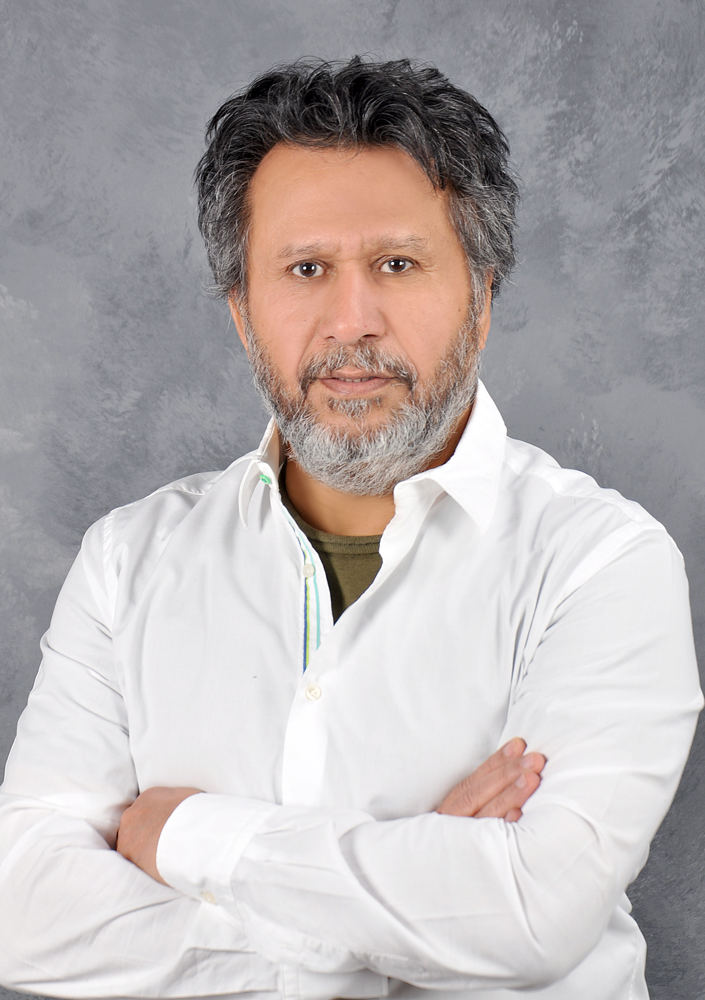

<div class="container"> <!-- Start Container for all rows -->
  <div class="row my-5 pt-5">
      <br/><br/><br/><br/><br/><br/><br/><br/><br/>
      <div class="col-sm-2">
          
      </div>
      <div class="col-sm-9" id="abouText">
          <br/><br/><br/>
          <h2 >About us - A warm message from the Founder…</h2>
          <br/><br/>
          <p class="text-justify">
              I congratulate you on your decision to take the lead and pursue examining a professional certification in Creative Success Architecture. I honestly hope that your resolve will not fade, and your growing desire will guide you to acquire certification in this very exciting area. It is always an emotional moment for me to face people who struggle in life and confront it with patience, strength, flexibility, and perseverance bypassing obstacles and making something of their lives. Just by viewing this document, I am told that you are on your way towards self realizations, building your best character, and gaining vital knowledge in this area. I am personaly very proud that you have taken this decision to improve your intellectual capacities, and enhance your mental skills that Creative Success Architecture solicits. The discovery in the Creative Success Architecture system will reveal your primal ingenuity and place your mind on the outskirts of creativity, innovation, success, change, and flow using God bestowed abilities. We appreciate your interest to join our society of trainer, teachers, scholars, students, and families who have acquired these skills and are honing on implementing them in their daily lives. Success Architecture world wide is committed to provide you the best education and training in its innovative concepts. We are also committed to deliver video training on the internet and all devices as seen in our web site successarchitecture.com. Meanwhile, we support and encourage professionally certified trainers to record their training programs in various areas of self development for distribution. I was lucky to discover and develop this ingenuis system that runs the universe according to an eternal equilibrium in order to achieve its goal; to be an incubator for life in the mist of prevailing chaos. That same system is within every human being. Success Architecture shows you the elements of this balance that gurantee creative success in self development, achievement, and planning your life. Your designed TRAC you pursue, and walk; fits your primal brain and will not raise conflict with your basic instints.
          </p>
          <p class="text-justify">
              The other reason I am so enthusiastic about training this special creative universal secret, which transcends our core, is the scientific foundation of its principles. Unlike some other theories in self development and self contained energy it is not built on pseudo scientific hopes and wishes. Creative Success Architecture is found on the most solid System Engineering principles. It has roots in the principles of equilibrium found in the environment, and natural siences such as Physics, Chemistry, Artificial Intelligence, and Neurology. That being said, it does not mean it underminding the immense energy that could be yours for the taking once you implement its process.
          </p>
          <p class="text-justify">
              I start by wishing you the happiest of times, and the uttmost Success in your pursuit of the profesuional certification. This science that will open new horizons for you and your loved ones. I am constantly thrilled and amazed every now and then by the implications that unfold for me since 1980.
          </p>
          <h5>Please contract me directly if you need any more information.</h5>
      </div>
  </div>

</div> <!-- / End Container for all rows -->
